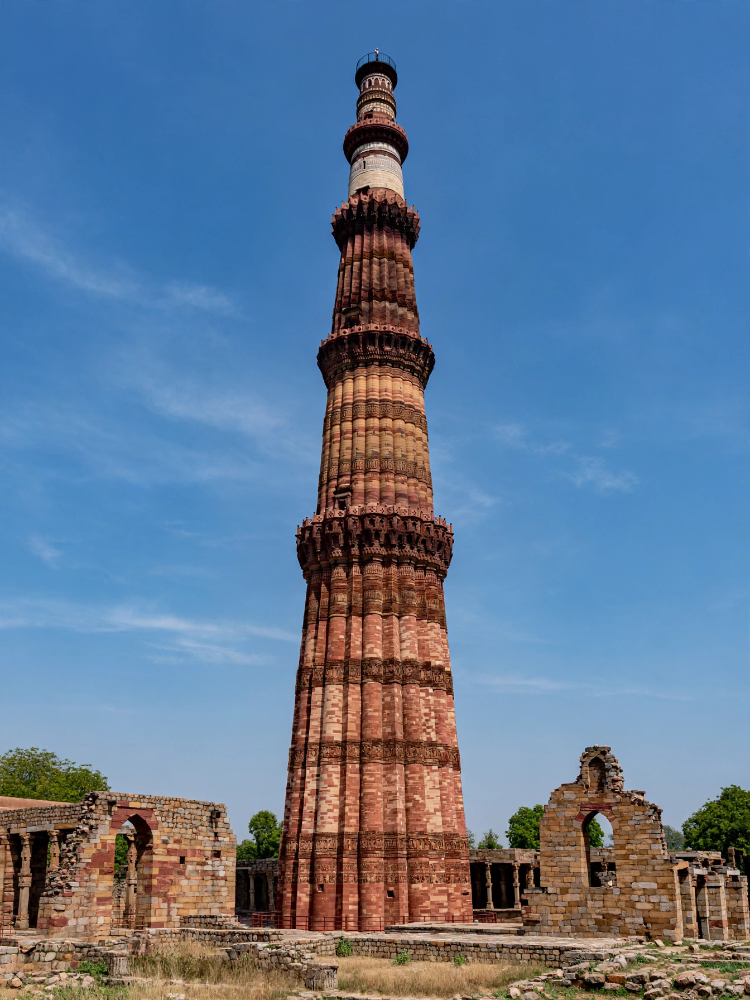

| Qutb Minar | |
|---|---|
 | |
| Location | Mehrauli, Delhi, India |
| Height | 72.5 metres (238 ft) |
| Construction begun | c. 1199 (Qutb-ud-din Aibak) |
| Completed | Early 13th century (Iltutmish); later repairs |
| Materials | Red sandstone and marble |
| Status | UNESCO World Heritage Site (Qutb complex, 1993) |
The Qutb Minar (also spelled Qutub Minar and Qutb Minar) is a minaret and "victory tower" in the Mehrauli area of Delhi, India, forming part of the Qutb complex. At 72.5 metres (238 feet) it is the tallest brick minaret in the world, a tapering tower of five storeys built of red sandstone and marble, inscribed with bands of Quranic calligraphy. Construction was begun about 1199 by Qutb-ud-din Aibak, founder of the Delhi Sultanate, and completed by his successor Iltutmish. The complex — among the most visited monuments in India — was inscribed as a UNESCO World Heritage Site in 1993.
Qutb-ud-din Aibak, a former slave-general of the Ghurid empire who became the first sultan of Delhi, began the tower around 1192–1199 after the Ghurid conquest of northern India, raising only the first storey. Its purposes were layered: a minaret from which the muezzin could call the faithful of the adjacent Quwwat-ul-Islam ("Might of Islam") mosque to prayer, and a triumphal monument proclaiming the arrival of Muslim rule. His son-in-law and successor, Iltutmish, added three more storeys around 1220. Lightning damaged the top in 1369, and Firoz Shah Tughlaq repaired the tower, replacing the damaged fourth storey with two smaller ones in sandstone and marble — which accounts for the differing styles visitors see today. Later repairs followed earthquakes under Sikandar Lodi and, in the British period, under Major Robert Smith, whose added cupola (1848) was afterwards removed and now stands separately on the lawns, nicknamed "Smith's Folly".
The tower tapers from a base diameter of about 14.3 metres to just 2.7 metres at the top, reached by a spiral staircase of 379 steps. Its five storeys are separated by projecting balconies (muqarnas corbelling), and the fluted shaft alternates angular and rounded ribs — plain in one storey, star-shaped in another. Carved bands carry inscriptions in Arabic and Nagari recording its builders and repairs, intermixed with intricate floral and geometric ornament. The tower's design draws on the minaret tradition of western Asia while being executed in the idioms of Indian stone craftsmanship.
Around the minaret stand some of the earliest surviving Islamic monuments in India: the Quwwat-ul-Islam mosque (begun 1193), screened by a great arched facade added in 1199 and built in part with carved pillars reused from demolished temples; the rust-free Iron Pillar of Delhi, a 7-metre Gupta-era column (c. 4th–5th century CE) famous for its metallurgical purity; the tomb of Iltutmish (1235); the Alai Darwaza gateway (1311), a masterpiece of early Sultanate inlay work; and the stump of the Alai Minar, Ala-ud-din Khalji's abortive attempt to build a tower twice the Qutb Minar's size.
Public access to the interior staircase has been closed since a stampede accident in 1981. The monument lends its name to the surrounding Qutub Minar metro station and the Mehrauli Archaeological Park.
See also: Delhi Sultanate · Iron pillar of Delhi · Delhi